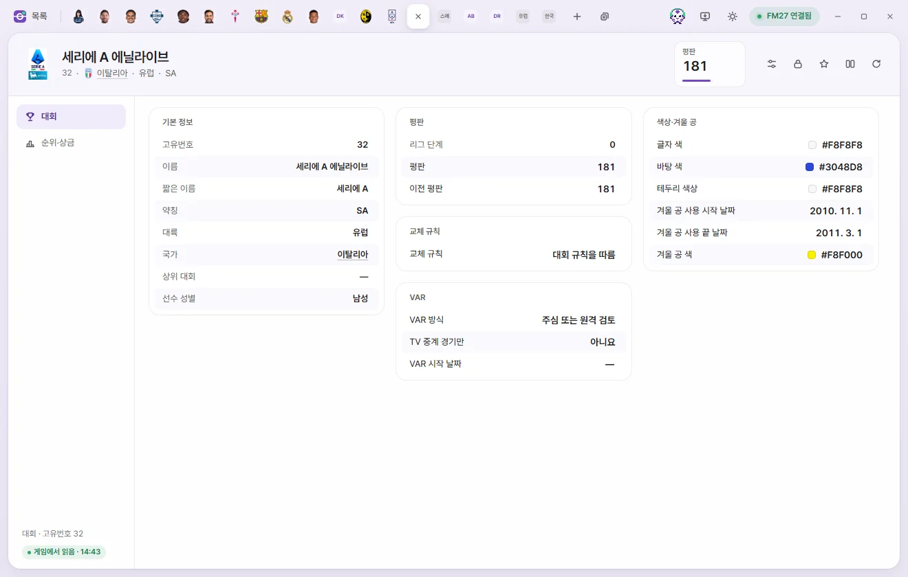
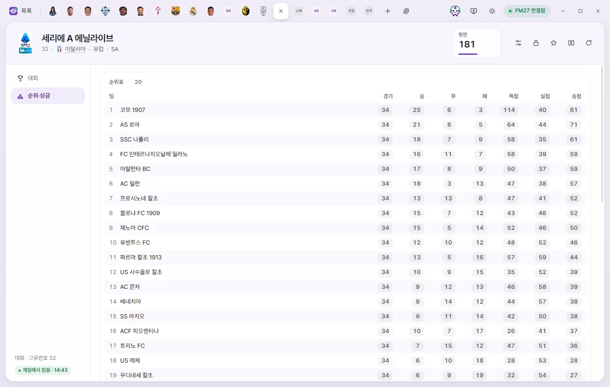

Edit tabs
Competition
How to edit a league or cup competition's reputation, substitution rules, VAR, competition colours, and winter ball, as well as league tables, position prize money, and cup round prize money.


How to open the tab
Click a competition's name in the Competitions list, or click any underlined competition name elsewhere—such as a team's league, division, or Continental competition on the Team tab. Editing values and saving work the same way as on the Player tab. Editing values on the Player page
Tab header
- Below the name you'll see its Unique ID, Nation, Continent, and Abbreviation.
- There is a single number card: Reputation (0–200). Click it to type a number directly.
- The buttons on the right are Presets, Locks, Favourites, Compare, and Reload from game. There is no ⚡ button on the Competition tab.
There are 2 sub-pages: Competition and Table & prize money.
Competition
Overview
All fields here are read-only: Unique ID, Name, Short name, Abbreviation, Continent, Nation, Parent competition, and Player gender (the gender of players competing in it). Click Nation or Parent competition to open that tab.
Reputation
| Field | Description | Editable range |
|---|---|---|
| Reputation | Competition reputation | 0–200 |
| Previous reputation | The competition's previous reputation. Competitions without a value show 255 ('None') | 0–254 |
| League level | 0 appears to mean top flight, and 100 not applicable | Read-only |
Substitution rules
| Field | Description | Editable range |
|---|---|---|
| Substitution rules | Around 70 choices—such as '5 from 7 subs' and '5 from 9 subs, max 3 stoppages'—plus 'Use competition rules' | Options |
VAR
| Field | Description | Editable range |
|---|---|---|
| VAR type | Referee review, Remote review, Referee and/or remote review, Unknown type, No VAR | Options |
| TV matches only | Whether VAR is used only in televised matches | Yes, No |
| VAR start date | Blank on some competitions; what a blank date means has not been confirmed | Date |
Values appear only on competitions that already have VAR configured; FMAX does not create VAR settings for competitions without them. When a changed VAR type begins taking effect in matches has not been confirmed in the game.
Colours & winter ball
| Field | Description | Editable range |
|---|---|---|
| Text colour, Background colour, Trim colour | Colours used when displaying the competition | Colour |
| Winter ball start date, end date | Populated only for competitions that use a winter ball | Date |
| Winter ball colour | Colour |
Table & prize money


Depending on whether the competition's first stage is a league or a cup, different lists appear here. Multi-stage competitions show only their first stage.
League rankings
These are the figures in the league standings. Rows appear in the game's current table order with each team's Rank in front. Click any number to edit it.
| Field | Editable range |
|---|---|
| Team | Read-only |
| Matches, Won, Drawn, Lost | 0–255 |
| Scoring, Goals conceded | 0–999 |
| Pts | −99 to 999 |
Position prize money
Prize money awarded by final league finish, listed from 1st place, 2nd place, and so on down to the last position set by the game. Click any amount to edit it (£0 to £2 billion). Per-match prize money for wins, draws, and losses has not been located yet and is not included here.
Cup rounds
When a competition's first stage is a cup, each round shows its round name, draw date, start date, number of teams, Winner prize money, Losing prize money, and Appearance money.
- Winner prize money and Losing prize money go to the winning and losing teams in that round, while Appearance money is paid just for playing in it.
- You can click and edit any of the three prize fields that already have a value set (£0 to £2 billion). 'None' means the game hasn't set a value for that slot.
- Round names, dates, and team counts are read-only.